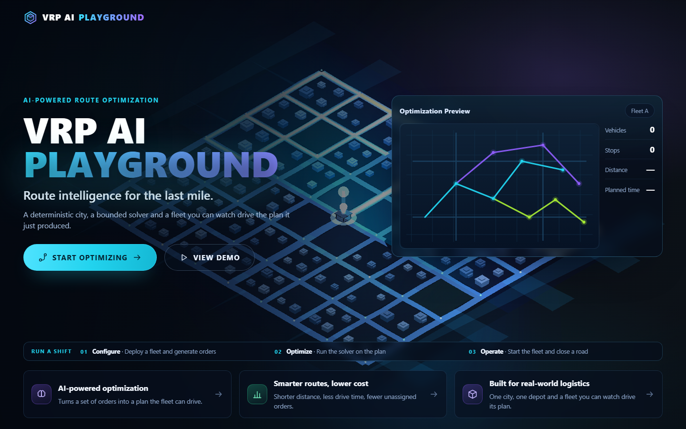

Execution flow
From the landing page to a running fleet and a closed road. Every frame is a
real capture of the application served by docker compose up --build.

AI-powered route optimization
Route intelligence for the last mile.
A 3D control tower that solves a vehicle routing problem with OR-Tools, draws the plan on a deterministic city, lets you close a road and re-plan, and explains every revision with a language model running on your own machine.
Run a shift
What it does
Every surface is driven by the frozen REST/SSE contract: the same revision the solver produced is the revision the copilot reads.
OR-Tools solves the routing problem from the deployed fleet and the generated orders, then reports distance, drive time, delay, unassigned orders and the economic cost behind the revision.
63 nodes, 110 road edges, 48 blocks and 137 buildings generated from a versioned local dataset and drawn with Three.js in an isometric operational view.
Start, pause and change speed. The robots drive the plan while the clock advances, and the renderer reports real draw calls, triangles and frame rate.
Arm the closure tool and drag across a road to block it in both directions. The map paints it coral, lists the affected vehicles and orders, and re-plans.
Install qwen3:4b on demand with streamed progress, activate it,
ask about the revision on screen and get an answer that cites the fields it
used.
The backend computes every number and the model only writes the narrative, so the report cannot invent a metric. Export it as Markdown.
Two demos
Both players work with the mouse, the keyboard (← → Space) and the step buttons, and they run entirely from this folder.
From the landing page to a running fleet and a closed road. Every frame is a
real capture of the application served by docker compose up --build.
Install the model on demand, activate it, ask a grounded question, decide the
proposal and open the shift report. The values are the frozen golden example
in docs/contracts/examples/, so they are the values the API
actually returns.
Step 1 of 5
Steps 2 to 5 are a faithful re-creation of the copilot panel and the report viewer, rendered here so the flow can be read without a running model. Demo 1 is built from real captures of the application.
Quick start
You need Docker with the Compose plugin. Nothing else: no Node, no Python, no model weights to fetch by hand.
# from the repository root
docker compose up --buildThen open http://localhost:8080. The API answers directly at :8000/health.
Every value has a safe default in compose.yaml. Copy
.env.example to .env only to change a port, the Ollama
probe timeout or the SQLite path.
No scenario exists, no fleet is deployed and no model is downloaded or preloaded. That is the contract the first screen has to satisfy.
Enter the deck from the landing page.
On Fleet, set 2 vehicles and 6 orders. The city draws the road graph, the depot and the robots.
The solver returns a plan and the KPI panels fill in with distance, drive time, capacity and the economic cost.
The robots drive the plan. Right-drag a robot with the claw onto another node and the plan recomputes.
Blocking a road in both directions publishes a new revision; reopening frees the slot and keeps any other closure in force.
The first query needs the model, so this is where the download happens. Then ask about the revision on screen, confirm or reject the proposal, and export the shift report. See demo 2.
Every execution is generated fresh, so the next fleet, the next orders and the next plan differ from the previous run.
# backend: health, AI status, contract shape, startup side effects
.\.venv\Scripts\python.exe -m unittest discover -s api/tests -t .
# contracts: schemas, examples and REST coverage
.\.venv\Scripts\python.exe spike/fase0/tools/validate_contracts.py
# frontend: type check, production build, unit tests
cd frontend
npm run build
npm test
# browser verification against the real application (API on :8000)
npm run test:e2eArchitecture
| Service | Base image | Host port | Networks | Purpose |
|---|---|---|---|---|
frontend |
node:24.21.0-bookworm-slim |
${FRONTEND_PORT:-8080} |
edge |
Serves the Vite build and proxies /health and /api/* |
api |
python:3.14.7-slim-bookworm |
${API_PORT:-8000} |
edge, backend |
FastAPI backend; the only component allowed to call Ollama |
ollama |
ollama/ollama:0.34.2 |
none | backend |
Local inference runtime; unreachable from the browser |
latest tag in the
stack; the approved versions and their sources live in
versions.md.
roboroute-ollama-models holds the
weights and roboroute-sqlite-data holds the scenario state, so the
second run starts with the model already installed.
content-length stays correct, while text/event-stream
responses are forwarded frame by frame. That is why the download progress moves.
AI flow
The model is fixed by the backend at qwen3:4b. A request that tries to
choose a model or override its options is rejected with
MODEL_OVERRIDE_FORBIDDEN.
POST /api/ai/model/install
Starts the download only when you press the button, and never twice at the same time. Progress arrives as server-sent events.
POST /api/ai/activate
Preloads the installed model with a keep-alive window. No download, no state change to the scenario.
POST /api/ai/chat
Answers from the validated snapshot of the revision you are looking at, and cites the revision and the fields it used.
POST /api/ai/reports/shift
Returns Markdown and JSON, validated against JSON Schema. Every metric is computed by the backend.
The API reports the service as unavailable instead of failing to boot, and the copilot shows a retryable error. The rest of the product works normally: a closed road, a re-plan and a report skeleton never need the model. The model is downloaded only after the user presses install, and the Ollama port is never published.
| Setting | Value | Where |
|---|---|---|
| Model | qwen3:4b | Backend constant, never sent by the browser |
| Context | 8192 tokens | NUM_CTX |
| Thinking | disabled | THINK, sent as think: false |
| Query temperature | 0.2 | CHAT_TEMPERATURE |
| Report temperature | 0 | REPORT_TEMPERATURE |
| Parallelism / loaded models | 1 / 1 | OLLAMA_NUM_PARALLEL, OLLAMA_MAX_LOADED_MODELS |
| Cloud features | disabled | OLLAMA_NO_CLOUD=1 |
Contract
Contract v1, frozen on 2026-09-22. Changing a name, a unit or the revision semantics means bumping the contract version, the schema and the example together.
| # | Method and path | Kind | Success | rev |
|---|---|---|---|---|
| 1 | POST /api/scenarios | mutation | 201 | yes |
| 2 | DELETE /api/scenarios/{scenarioId} | mutation | 200 | yes |
| 3 | POST /api/scenarios/{scenarioId}/vehicles/generate | mutation | 200 | yes |
| 4 | POST /api/scenarios/{scenarioId}/orders/generate | mutation | 200 | yes |
| 5 | POST /api/scenarios/{scenarioId}/optimize | mutation | 200 | yes |
| 6 | POST /api/scenarios/{scenarioId}/simulation/start | mutation | 200 | yes |
| 7 | POST /api/scenarios/{scenarioId}/simulation/pause | mutation | 200 | yes |
| 8 | PATCH /api/scenarios/{scenarioId}/vehicles/{vehicleId}/position | mutation | 200 | yes |
| 9 | POST /api/scenarios/{scenarioId}/barriers | mutation | 200 | yes |
| 10 | DELETE /api/scenarios/{scenarioId}/barriers/{barrierId} | mutation | 200 | yes |
| 11 | GET /api/scenarios/{scenarioId} | read | 200 | no |
| 12 | GET /api/scenarios/{scenarioId}/events | stream | 200 | no |
| 13 | GET /api/ai/status | read | 200 | no |
| 14 | POST /api/ai/model/install | mutation | 202 | no |
| 15 | GET /api/ai/model/install/events | stream | 200 | no |
| 16 | POST /api/ai/activate | mutation | 200 | no |
| 17 | POST /api/ai/chat | mutation | 200 | no |
| 18 | POST /api/ai/reports/shift | mutation | 200 | no |
| 19 | POST /api/ai/proposals/{proposalId}/confirm | mutation | 200 | yes |
| 20 | POST /api/ai/proposals/{proposalId}/reject | mutation | 200 | yes |
GET /health is an infrastructure probe for Compose and the status
surface; it is deliberately outside the frozen contract.
Scope